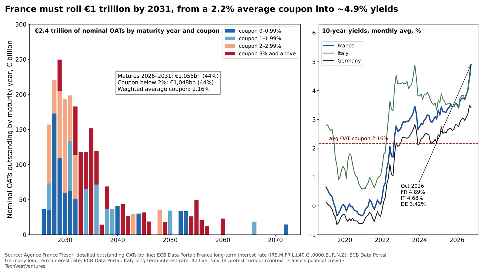

Q10. France OATs

Left: France's €2,401 billion of nominal fixed-rate government bonds (OATs) by year of maturity, coloured by coupon (Agence France Trésor detailed outstanding table, accessed Nov 15 2026; inflation-linked OATs not included). €1,055 billion (44%) falls due between now and 2031, and €1,048 billion (44%) carries coupons below 2% — much of it issued at 0–0.75% in 2020–21. The weighted average coupon is 2.16%. Right: monthly 10-year yields (ECB convergence-criterion series). France's 10-year averaged 4.89% in October 2026, up from 3.68% in June and above Italy (4.68%). Since the Italian series began in March 1991, France's monthly 10-year yield has topped Italy's in only six months, all since December 2025; the spread over Germany was 147 bp.
- Largest single maturity years: 2029 €250bn, 2028 €221bn, 2031 €198bn, 2030 €193bn.
- France 10-year monthly averages in 2026: Jun 3.68%, Jul 3.85%, Aug 4.00%, Sep 4.44%, Oct 4.89%.
- Every euro rolled from a sub-1% coupon into a ~4.9% yield multiplies that slice of the interest bill several times over; the effect builds year by year as old bonds mature.
- The counter-argument: the bill rises only gradually because old bonds mature over decades, and the 2029 and 2032 lines with 5.5% and 5.75% coupons will refinance more cheaply. The October jump coincided with the street protest wave shown in the Global Riot R7 and R8 charts.
Note: The AFT table lists nominal outstanding by line; amounts are face value and exclude inflation-indexed OATs (OATi/OAT€i) and short-term BTFs. Lines maturing in the same year are summed. The ECB series is a monthly average of secondary-market 10-year benchmark yields. The France-versus-Italy comparison uses the full ECB monthly series (Italy from March 1991).
Sources: Agence France Trésor: detailed outstanding OATs by line ECB Data Portal: France long-term interest rate (IRS.M.FR.L.L40.CI.0000.EUR.N.Z) ECB Data Portal: Germany long-term interest rate ECB Data Portal: Italy long-term interest rate ICI live: Nov 14 protest turnout (context: France's political crisis)